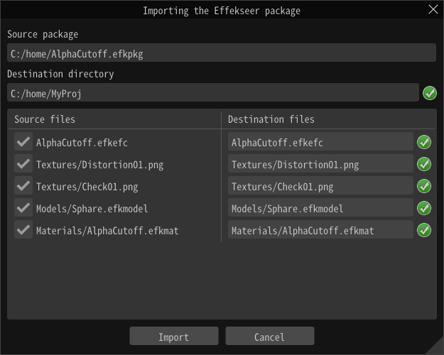

文件 - 导入¶
Effekseer包¶
导入efkpkg文件。
efkpkg文件是包含了一个或多个efkefc文件和多个资源文件的包文件。
设置导入的文件后，会显示导入对话框。
你可以在对话框内进行以下操作：
修改导入的目标文件夹
初始情况下，设置的是当前打开的特效的文件夹。
分布设置是否导入每个文件
如果你取消勾选文件名左侧的复选框，文件将不会被导入。
如果导入的目标中已经存在该文件，将会显示一个警告图标。
重命名要导入的文件
当你修改文件名时，特效工程中对该文件的引用也会被重写。
有许多使路径的编辑更快捷的功能
合并相同的文件
避免覆盖
添加根文件夹
如果没有问题了，点击“导入”按钮，pfkpkg中的文件将会被解压到导入目标文件夹中。